pacman::p_load(tidyverse, magrittr, broom, nlme,
multcomp, emmeans, ggpubr, multcompView,
rstatix, conflicted, see, rcompanion)
conflict_prefer("select", "dplyr")
conflict_prefer("filter", "dplyr")
conflict_prefer("mutate", "dplyr")32 Multiple Vergleiche oder Post-hoc Tests
Version vom August 27, 2023 um 12:27:10
In diesem Kapitel wollen wir uns mit den multipen Vergleichen beschäftigen. Das heißt, wir wollen statistisch Testen, ob sich die Level eines Faktors voneinander unterscheiden. Eventuell hast du schon eine einfaktorielle ANOVA gerechnet, wie in Kapitel 24.2 beschrieben. Oder aber du hast eine mehrfaktorielle ANOVA gerechnet wie in Kapitel 24.3 gezeigt. In beiden Fällen hast du jetzt einen signifikanten Faktor, der mehr als zwei Level hat. Du willst nun wissen, welche der Gruppenmittelwerte der Level sich signifikant unterscheiden. Hierfür können wir verschiedene Ansätze wählen.
- Wir haben eine einfaktorielle ANOVA gerechnet und nutzen nun paarweise Vergleiche um herauszufinden welche Gruppenmittelwerte sich unterscheiden (siehe Kapitel 32.3)
- Wir haben eine mehrfaktorielle ANOVA gerechnet und haben daher mehrere Faktoren. Wir nutzen nun entweder das R Paket
multcomp(siehe Kapitel 32.4) oder das R Paketemmeans(siehe Kapitel 32.5) um herauszufinden welche Gruppenmittelwerte sich unterscheiden.
Wenn wir multiple Mittelwertsvergleiche rechnen, dann tritt das Problem des multipen Testens auf. Im Kapitel 21.3 kannst du mehr über die Problematik erfahren und wie wir mit der \(\alpha\) Inflation umgehen. Hier in diesem Kapitel gehe ich jetzt davon aus, dass dir die \(\alpha\) Adjustierung ein Begriff ist.
Der paarweise Mittelwertsvergleich wird auch gerne Tukey Test genannt. Das heißt, dass der Tukey Test alle Gruppen miteinander vergleicht. Der Tukey Test wird daher auch gerne all pair Vergleich genannt.
32.1 Genutzte R Pakete für das Kapitel
Wir wollen folgende R Pakete in diesem Kapitel nutzen.
Am Ende des Kapitels findest du nochmal den gesamten R Code in einem Rutsch zum selber durchführen oder aber kopieren.
32.2 Daten
Wir nutzen in diesem Kapitel den Datensatz aus dem Beispiel in Kapitel 6. Wir haben als Outcome die Sprunglänge in [cm] von Flöhen. Die Sprunglänge haben wir an Flöhen von Hunde, Katzen und Füchsen gemessen. Der Datensatz ist also recht übeerschaubar. Wir haben ein normalverteiltes \(y\) mit jump_length sowie einen multinomialverteiltes \(y\) mit grade und einen Faktor animal mit drei Leveln.
Du kannst dir komplexere Auswertungen in dem Skript Beispielhaften Auswertungen anschauen. Dort sammelt sich mit der Zeit Auswertungen vom Fachbereich an. Daher finden sich dort auch Beispiele für multiple Vergleiche.
Im Folgenden laden wir den Datensatz flea_dog_cat_fox.csv und selektieren mit der Funktion select() die benötigten Spalten. Abschließend müssen wir die Spalte animalnoch in einen Faktor umwandeln. Damit ist unsere Vorbereitung des Datensatzes abgeschlossen.
fac1_tbl <- read_csv2("data/flea_dog_cat_fox.csv") %>%
select(animal, jump_length, grade) %>%
mutate(animal = as_factor(animal))In der Tabelle 32.1 ist der Datensatz fac1_tbl nochmal dargestellt.
| animal | jump_length | grade |
|---|---|---|
| dog | 5.7 | 8 |
| dog | 8.9 | 8 |
| dog | 11.8 | 6 |
| dog | 8.2 | 8 |
| dog | 5.6 | 7 |
| dog | 9.1 | 7 |
| dog | 7.6 | 9 |
| cat | 3.2 | 7 |
| cat | 2.2 | 5 |
| cat | 5.4 | 7 |
| cat | 4.1 | 6 |
| cat | 4.3 | 6 |
| cat | 7.9 | 6 |
| cat | 6.1 | 5 |
| fox | 7.7 | 5 |
| fox | 8.1 | 4 |
| fox | 9.1 | 4 |
| fox | 9.7 | 5 |
| fox | 10.6 | 4 |
| fox | 8.6 | 4 |
| fox | 10.3 | 3 |
Wir werden nun den Datensatz fac1_tbl in den folgenden Abschnitten immer wieder nutzen.
32.2.1 Hypothesen für multiple Vergleiche
Als wir eine ANOVA gerechnet hatten, hatten wir nur eine Nullhypothese und eine Alternativehypothese. Wenn wir Nullhypothese abgelehnt hatten, wussten wir nur, dass sich mindestens ein paarweiser Vergleich unterschiedet. Multiple Vergleich lösen nun dieses Problem und führen ein Hypothesenpaar für jeden paarweisen Vergleich ein. Zum einen rechnen wir damit \(k\) Tests und haben damit auch \(k\) Hypothesenpaare (siehe auch Kapitel 21.3 zur Problematik des wiederholten Testens).
Wenn wir zum Beispiel alle Level des Faktors animal miteinander Vergleichen wollen, dann rechnen wir \(k=3\) paarweise Vergleiche. Im Folgenden sind alle drei Hypothesenpaare dargestellt.
\[ \begin{aligned} H_{01}: &\; \bar{y}_{cat} = \bar{y}_{dog}\\ H_{A1}: &\; \bar{y}_{cat} \ne \bar{y}_{dog}\\ \end{aligned} \]
\[ \begin{aligned} H_{02}: &\; \bar{y}_{cat} = \bar{y}_{fox}\\ H_{A2}: &\; \bar{y}_{cat} \ne \bar{y}_{fox}\\ \end{aligned} \]
\[ \begin{aligned} H_{03}: &\; \bar{y}_{dog} = \bar{y}_{fox}\\ H_{A3}: &\; \bar{y}_{dog} \ne \bar{y}_{fox}\\ \end{aligned} \]
Wenn wir drei Vergleiche rechnen, dann haben wir eine \(\alpha\) Inflation vorliegen. Wir sagen, dass wir für das multiple Testen adjustieren müssen. In R gibt es eine Reihe von Adjustierungsverfahren. Wir nehmen meist Bonferroni oder das Verfahren, was in der jeweiligen Funktion als Standard (eng. default) gesetzt ist.
Wir adjustieren grundsätzlich die \(p\)-Werte und erhalten adjustierte \(p\)-Werte aus den jeweiligen Funktionen in R. Die adjustierten p-Werte können wir dann mit dem Signifikanzniveau von \(\alpha\) gleich 5% vergleichen.
32.3 Gruppenvergleiche mit pairwise.*.test()
Die Funktion
pairwise.*.test() ist veraltet, wir nutzen das R Paket emmeansoder das R Paket multcomp.Wenn wir nur einen Faktor mit mehr als zwei Leveln vorliegen haben, dann können wir die Funktion pairwise.*.test() nutzen. Der Stern * steht entweder als Platzhalter für t für den t-Test oder aber für wilcox für den Wilcoxon Test. Die Funktion ist relativ einfach zu nutzen und liefert auch sofort die entsprechenden p-Werte.
Die Funktion pairwise.*.test() ist in dem Sinne veraltet, da wir keine 95% Konfidenzintervalle generieren können. Da die Funktion aber immer mal wieder angefragt wird, ist die Funktion hier nochmal aufgeführt.
32.3.1 Paarweiser t Test
Wir nutzen den paarweisen t-Test,
- wenn wir ein normalverteiltes \(y\) vorliegen haben, wie
jump_length. - wenn wir nur einen Faktor mit mehr als zwei Leveln vorliegen haben, wie
animal. - wenn wir Varianzhomogenität über alle Level vorliegen haben, dann nutzen wir die Option
pool.sd = TRUE. Wenn wir Varianzheterogenität über alle Level des Faktors vorliegen haben, dann nutzen wirpool.sd = FALSE.
Die Funktion pairwise.t.test kann nicht mit Datensätzen arbeiten sondern nur mit Vektoren. Daher können wir der Funktion auch keine formula übergeben sondern müssen die Vektoren aus dem Datensatz mit fac1_tbl$jump_length für das Outcome und mit fac1_tbl$animal für die Gruppierende Variable benennen. Das ist umständlich und daher auch fehleranfällig. Wir können auch den %$%-Operator aus dem R Paket magrittr nutzen um die Problematik zu umgehen. Weiter unten siehst du dann einmal beide Anwendungen.
Mehr zu mutate_if() erfährst du auf der Hilfeseite von mutate()
Als Adjustierungsmethode für den \(\alpha\) Fehler wählen wir die Bonferroni-Methode mit p.adjust.method = "bonferroni" aus. Da wir eine etwas unübersichtliche Ausgabe in R erhalten nutzen wir die Funktion tidy()um die Ausgabe in ein sauberes tibble zu verwandeln. Abschließend runden wir noch alle numerischen Spalten mit der Funktion round auf drei Stellen hinter dem Komma.
pairwise.t.test(fac1_tbl$jump_length, fac1_tbl$animal,
p.adjust.method = "bonferroni",
pool.sd = TRUE) %>%
tidy %>%
mutate_if(is.numeric, round, 3)# A tibble: 3 × 3
group1 group2 p.value
<chr> <chr> <dbl>
1 cat dog 0.007
2 fox dog 0.876
3 fox cat 0.001Und das ganze nochmal mit dem %$%-Operator aus dem R Paket magrittr. In diesem Fall können wir uns das $ sparen und greifen direkt auf die Spalten des Datensatzes zu.
fac1_tbl %$%
pairwise.t.test(jump_length, animal,
p.adjust.method = "bonferroni",
pool.sd = TRUE) %>%
tidy %>%
mutate_if(is.numeric, round, 3)# A tibble: 3 × 3
group1 group2 p.value
<chr> <chr> <dbl>
1 cat dog 0.007
2 fox dog 0.876
3 fox cat 0.001Wir erhalten in einem Tibble die adjustierten p-Werte nach Bonferroni. Wir können daher die adjustierten p-Werte ganz normal mit dem Signifikanzniveau \(\alpha\) von 5% vergleichen. Wenn du keine adjustierten p-Werte möchtest, dann nutze die Option p.adjust.method = "none". Wir sehen, dass der Gruppenvergleich cat - dog signifikant ist, der Gruppenvergleich fox - dog nicht signifikant ist und der Gruppenvergleich fox - cat wiederum signifikant ist.
Leider können wir uns keine Konfidenzintervalle wiedergeben lassen, so dass die Funktion nicht dem Stand der Wissenschaft und deren Ansprüchen genügt.
Im Folgenden wollen wir uns nochmal die Visualisierung mit dem R Paket ggpubr anschauen. Die Hilfeseite des R Pakets ggpubr liefert noch eine Menge weitere Beispiele für den simplen Fall eines Modells \(y ~ x\), also von einem \(y\) und einem Faktor \(x\).
Um die Abbildung 32.1 zu erstellen müssen wir als erstes die Funktion compare_mean() nutzen um mit der formula Syntax einen t-Test zu rechnen. wir adjustieren die p-Werte nach Bonferroni. Anschließend erstellen wir einen Boxplot mit der Funktion ggboxplot() und speichern die Ausgabe in dem Objekt p. Wie in ggplot üblich können wir jetzt auf das Layer p über das +-Zeichen noch weitere Layer ergänzen. Wir nutzen die Funktion stat_pvalue_manual() um die asjustierten p-Werte aus dem Objekt stat_test_obj zu ergänzen. Abschließend wollen wir noch den p-Wert einer einfaktoriellen ANOVA als globalen Test ergänzen.
stat_test_obj <- compare_means(
jump_length ~ animal, data = fac1_tbl,
method = "t.test",
p.adjust.method = "bonferroni"
)
p <- ggboxplot(data = fac1_tbl, x = "animal", y = "jump_length",
color = "animal", palette =c("#00AFBB", "#E7B800", "#FC4E07"),
add = "jitter", shape = "animal")
p + stat_pvalue_manual(stat_test_obj, label = "p.adj", y.position = c(13, 16, 19)) +
stat_compare_means(label.y = 20, method = "anova") 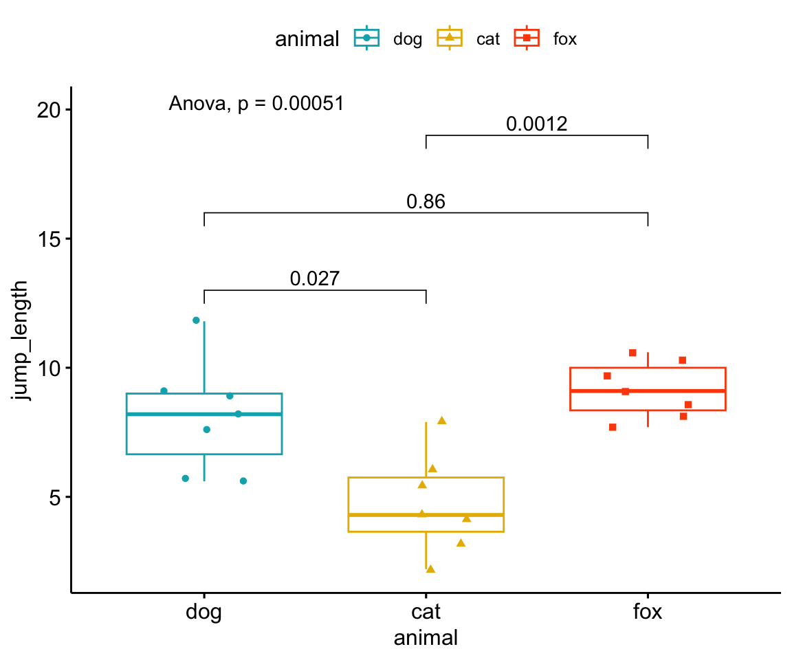
32.3.2 Paarweiser Wilcoxon Test
Wir nutzen den paarweisen Wilxocon Test,
- wenn wir ein nicht-normalverteiltes \(y\) vorliegen haben, wie
grade. - wenn wir nur einen Faktor mit mehr als zwei Leveln vorliegen haben, wie
animal.
Die Funktion pairwise.wilcox.test kann nicht mit Datensätzen arbeiten sondern nur mit Vektoren. Daher können wir der Funktion auch keine formula übergeben sondern müssen die Vektoren aus dem Datensatz mit fac1_tbl$jump_length für das Outcome und mit fac1_tbl$animal für die Gruppierende Variable benennen. Das ist umständlich und dhaer auch fehleranfällig.
Mehr zu mutate_if() erfährst du auf der Hilfeseite von mutate()
Als Adjustierungsmethode für den \(\alpha\) Fehler wählen wir die Bonferroni-Methode mit p.adjust.method = "bonferroni" aus. Da wir eine etwas unübersichtliche Ausgabe in R erhalten nutzen wir die Funktion tidy()um die Ausgabe in ein saubers tibble zu verwandeln. Abschließend runden wir noch alle numerischen Spalten mit der Funktion round auf drei Stellen hinter dem Komma.
pairwise.wilcox.test(fac1_tbl$grade, fac1_tbl$animal,
p.adjust.method = "bonferroni") %>%
tidy %>%
mutate_if(is.numeric, round, 3)# A tibble: 3 × 3
group1 group2 p.value
<chr> <chr> <dbl>
1 cat dog 0.045
2 fox dog 0.005
3 fox cat 0.011Wir erhalten in einem Tibble die adujstierten p-Werte nach Bonferroni. Wir können daher die adjustierten p-Werte ganz normal mit dem Signifikanzniveau \(\alpha\) von 5% vergleichen. Wir sehen, dass der Gruppenvergleich cat - dog knapp signifikant ist, der Gruppenvergleich fox - dog ebenfalls signifkant ist und der Gruppenvergleich fox - cat auch signifkant ist.
Leider können wir uns keine Konfidenzintervalle wiedergeben lassen, so dass die Funktion nicht dem Stand der Wissenschaft und deren Ansprüchen genügt.
Im Folgenden wollen wir uns nochmal die Visualisierung mit dem R Paket ggpubr anschauen. Die Hilfeseite des R Pakets ggpubr liefert noch eine Menge weitere Beispiele für den simplen Fall eines Modells \(y ~ x\), also von einem \(y\) und einem Faktor \(x\).
Um die Abbildung 32.2 zu erstellen müssen wir als erstes die Funktion compare_mean() nutzen um mit der formula Syntax einen Wilcoxon Test zu rechnen. wir adjustieren die p-Werte nach Bonferroni. Anschließend erstellen wir einen Boxplot mit der Funktion ggboxplot() und speichern die Ausgabe in dem Objekt p. Wie in ggplot üblich können wir jetzt auf das Layer p über das +-Zeichen noch weitere Layer ergänzen. Wir nutzen die Funktion stat_pvalue_manual() um die asjustierten p-Werte aus dem Objekt stat_test_obj zu ergänzen. Abschließend wollen wir noch den p-Wert eines Kruskal Wallis als globalen Test ergänzen.
stat_test_obj <- compare_means(
grade ~ animal, data = fac1_tbl,
method = "wilcox.test",
p.adjust.method = "bonferroni"
)
p <- ggboxplot(data = fac1_tbl, x = "animal", y = "grade",
color = "animal", palette =c("#00AFBB", "#E7B800", "#FC4E07"),
add = "jitter", shape = "animal")
p + stat_pvalue_manual(stat_test_obj, label = "p.adj", y.position = c(10, 13, 16)) +
stat_compare_means(label.y = 20, method = "kruskal.test") 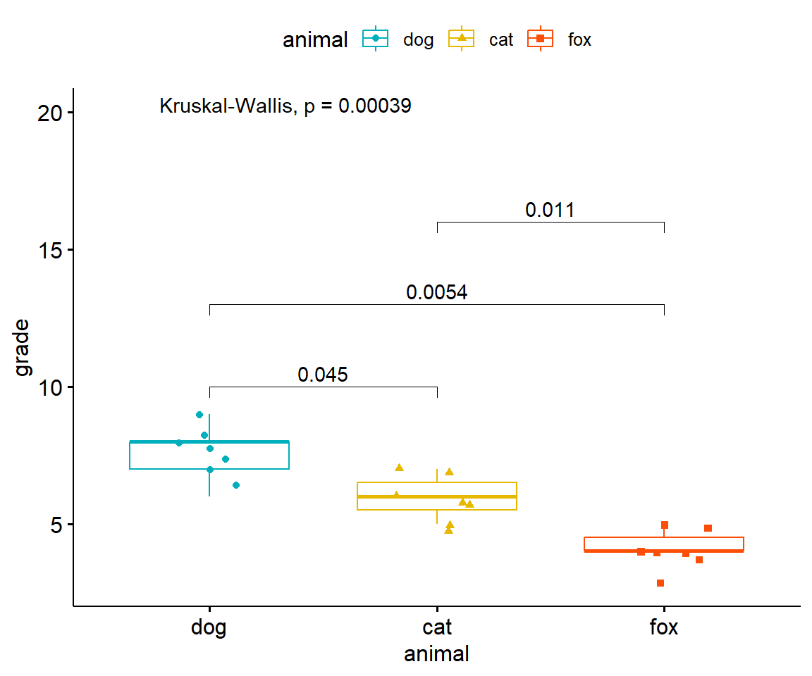
32.4 Gruppenvergleich mit dem multcomp Paket
Wir drehen hier einmal die Erklärung um. Wir machen erst die Anwendung in R und sollte dich dann noch mehr über die statistischen Hintergründe der Funktionen interessieren, folgt ein Abschnitt noch zur Theorie. Du wirst die Funktionen aus multcomp vermutlich in deiner Abschlussarbeit brauchen. Häufig werden multiple Gruppenvergleiche in Abschlussarbeiten gerechnet.
32.4.1 Gruppenvergleiche mit multcomp in R
Die Ausgabe von multcomp können über die Funktion tidy() aufgeräumt werden. Mehr dazu unter der Hilfeseite von tidy() zu multcomp.
Als erstes brauchen wir ein lineares Modell für die Verwendung von multcomp. Normalerweise verenden wir das gleiche Modell, was wir schon in der ANOVA verwendet haben. Wir nutzen hier ein simples lineares Modell mit nur einem Faktor. Im Prinzip kann das Modell auch größer sein, davon schauen wir uns dann später im Verlauf des Kapitels noch welche an.
fit_1 <- lm(jump_length ~ animal, data = fac1_tbl)Wir haben das Objeckt fit_1 mit der Funktion lm() erstellt. Im Modell sind jetzt alle Mittelwerte und die entsprechenden Varianzen geschätzt worden. Mit summary(fit_1) kannst du dir gerne das Modell auch nochmal anschauen.
Wenn wir keinen all-pair Vergleich rechnen wollen, dann können wir auch einen many-to-one Vergleich mit dem Dunnett Kontrast rechnen.
Im Anschluß nutzen wir die Funktion glht() um den multiplen vergleich zu rechnen. Als erstes musst du wissen, dass wenn wir alle Vergleiche rechnen wollen, wir einen all-pair Vergleich rechnen. In der Statistik heißt dieser Typ von Vergleich Tukey. Wir wollen jetzt als für den Faktor animal einen multiplen Tukey-Vergleich rechnen. Nichts anders sagt mcp(animal = "Tukey") aus, dabei steht mcp für multiple comparison procedure. Mit dem hinteren Teil der Funktion weiß jetzt die Funktion glht() was gerechnet werden soll. Wir müssen jetzt der Funktion nur noch mitgeben auf was der multiple vergleich gerehcnet werden soll, mit dem Objekt fit_1. Wir speichern die Ausgabe der Funktion in comp_1_obj.
comp_1_obj <- glht(fit_1, linfct = mcp(animal = "Tukey")) Mit dem Objekt comp_1_fit können wir noch nicht soviel anfangen. Der Inhalt ist etwas durcheinander und wir wollen noch die Konfidenzintervalle haben. Daher pipen wir comp_1_fit erstmal in die Funktion tidy() und alssen mit der Option conf.int = TRUE die simultanen 95% Konfidenzintervalle berechnen. Dann nutzen wir die Funktion select() um die wichtigen Spalten zu selektieren. Abschließend mutieren wir noch alle numerischen Spalten in dem wir auf die dritte Kommastelle runden. Wir speichern alles in das Objekt res_1_obj.
res_1_obj <- comp_1_obj %>%
tidy(conf.int = TRUE) %>%
select(contrast, estimate, adj.p.value,
conf.low, conf.high) %>%
mutate_if(is.numeric, round, 3)Wir lassen uns dann den Inhalt von dem Objekt res_1_obj ausgeben.
res_1_obj# A tibble: 3 × 5
contrast estimate adj.p.value conf.low conf.high
<chr> <dbl> <dbl> <dbl> <dbl>
1 cat - dog -3.39 0.006 -5.80 -0.968
2 fox - dog 1.03 0.535 -1.39 3.45
3 fox - cat 4.41 0 2.00 6.83 Wir erhalten ein tibble() mit fünf Spalten. Zum einen den contrast, der den Vergleich widerspiegelt. Wir vergleichen im ersten Kontrast die Katzen- mit den Hundeflöhen, wobei wir cat - dog rechnen. Also wirklich der Mittelwert der Sprungweite der Katzenflöhe minus den Mittelwert der Sprungweite der Hundeflöhe rechnen. In der Spalte estimate sehen wir den Mittelwertsunterschied. Der Mittelwertsunterschied ist in der Richtung nicht ohne den Kontrast zu interpretieren. Danach erhalten wir die adjustierten \(p\)-Wert sowie die simultanen 95% Konfidenzintervalle.
Wir können die Nullhypothese ablehnen für den Vergleichecat - dog mit einem p-Wert von \(0.006\) sowie für den Vergleich \(fox - cat\) mit einem p-Wert von \(0.001\). Beide p-Werte liegen unter dem Signifikanzniveau von \(\alpha\) gleich 5%.
Wenn es die unadjustierten \(p\)-Werte sein sollen, dann müssen wir nochmal das glht-Objekt in die Funktion summary() stecken und dann die Option test = adjusted("none") wählen. Dann können wir weiter machen wie gewohnt.
summary(comp_1_obj, test = adjusted("none")) %>%
tidy() # A tibble: 3 × 7
term contrast null.value estimate std.error statistic p.value
<chr> <chr> <dbl> <dbl> <dbl> <dbl> <dbl>
1 animal cat - dog 0 -3.39 0.947 -3.57 0.00217
2 animal fox - dog 0 1.03 0.947 1.09 0.292
3 animal fox - cat 0 4.41 0.947 4.66 0.000195In Abbildung 32.3 sind die simultanen und damit adjustierten 95% Konfidenzintervalle nochmal in einem ggplot visualisiert. Die Kontraste und die Position hängen von dem Faktorlevel ab. Mit der Funktion factor() kannst du die Sortierung der Level einem Faktor ändern und somit auch Position auf den Achsen.
ggplot(res_1_obj, aes(contrast, y=estimate,
ymin=conf.low, ymax=conf.high)) +
geom_hline(yintercept=0, linetype="11", colour="grey60") +
geom_errorbar(width=0.1) +
geom_point() +
coord_flip() +
theme_classic()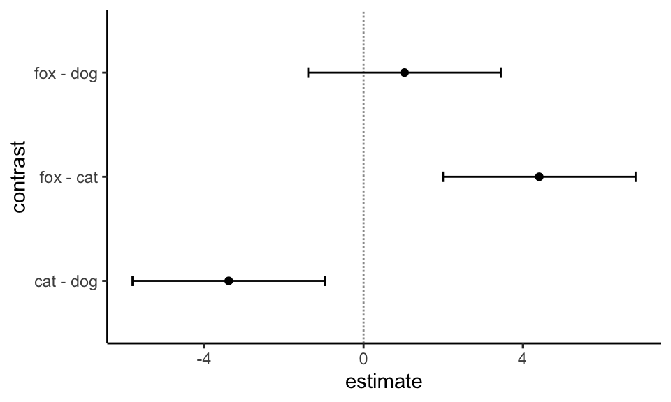
Die Entscheidung gegen die Nullhypothese anhand der simultanen 95% Konfidenzintervalle ist inhaltlich gleich, wie die Entscheidung anhand der p-Werte. Wir entscheiden gegen die Nullhypothese, wenn die 0 nicht mit im Konfindenzintervall enthalten ist. Wir wählen hier die 0 zur Entscheidung gegen die Nullhypothese, weil wir einen Mittelwertsvergleich rechnen.
Für den Vergleich fox -dog ist die 0 im 95% Konfidenzintervall, wir können daher die Nullhypothese nicht ablehnen. Das 95% Konfidenzintervall ist nicht signifikant. Bei dem Vergleich fox - cat sowie dem Vergleich cat - dog ist jeweils die 0 nicht im 95% Konfidenzintervall enthalten. Beide 95% Konfidenzintervalle sind signifikant, wir können die Nullhypothese ablehnen.
32.5 Gruppenvergleich mit dem emmeans Paket
Im Folgenden wollen wir uns mit einem anderen R Paket beschäftigen was auch multiple Vergleiche rechnen kann. In diesem Kapitel nutzen wir das R Paket emmeans. Im Prinzip kann emmeans das Gleiche wir das R Paket multcomp. Beide Pakete rechnen dir einen multipen Vergleich. Das Paket emmeans kann noch mit nested comparisons umgehen. Deshlb hier nochmal die Vorstellung von emmeans. Du kannst aber für eine simple Auswertung mit nur einem Faktor beide Pakete verwenden.
Wir können hier nicht alles erklären und im Detail durchgehen. Hier gibt es noch ein aufwendiges Tutorium zu emmeans: Getting started with emmeans.
Daneben gibt es auch noch die Einführung mit Theorie auf der Seite des R Paktes
Es gibt hier auch ein weiteres englischsprachiges Tutorium Don’t Ignore Interactions - Unleash the Full Power of Models with {emmeans} R-package oder {emmeans} Game-Changing R-package Squeezes Hidden Knowledge out of Models!. DISCLAIMER: Der Text ist gut, die Bebilderung des entsprechenden Videos geht so leider mal gar nicht…
32.5.1 Gruppenvergleiche mit emmeans in R
Um den multiplen Vergleich in emmeans durchführen zu können brauchen wir zuerst ein lineares Modell, was uns die notwenidgen Parameter wie Mittelwerte und Standardabweichungen liefert. Wir nutzen in unserem simplen Beispiel ein lineares Modell mit einer Einflussvariable \(x\) und nehmen an, dass unser Outcome \(y\) normalverteilt ist. Achtung, hier muss natürlich das \(x\) ein Faktor sein. Dann können wir ganz einfach die Funktion lm() nutzen. Im Folgenden fitten wir das Modell fit_2 was wir dann auch weiter nutzen werden.
fit_2 <- lm(jump_length ~ animal, data = fac1_tbl)Der multiple Vergleich in emmeans ist mehrschrittig. Wir pipen unser Modell aus fit_2 in die Funktion emmeans(). Wir geben mit ~ animal an, dass wir über die Level des Faktors animal einen Vergleich rechnen wollen. Wir adjustieren die \(p\)-Werte nach Bonferroni. Danach pipen wir weiter in die Funktion contrast() wo der eigentliche Vergleich festgelegt wird. In unserem Fall wollen wir einen many-to-one Vergleich rechnen. Alle Gruppen zu der Gruppe fox. Du kannst mit ref = auch ein anderes Level deines Faktors wählen.
comp_2_obj <- fit_2 %>%
emmeans(~ animal) %>%
contrast(method = "trt.vs.ctrl", ref = "fox", adjust = "bonferroni")
comp_2_obj contrast estimate SE df t.ratio p.value
dog - fox -1.03 0.947 18 -1.086 0.5837
cat - fox -4.41 0.947 18 -4.660 0.0004
P value adjustment: bonferroni method for 2 tests Wir können auch einen anderen Kontrast wählen. Wir überschreiben jetzt das Objekt comp_2_obj mit dem Kontrast all-pair, der alle möglichen Vergleiche rechnet. In emmeans heißt der all-pair Kontrast pairwise.
Die Ausgabe von emmeans können über die Funktion tidy() aufgeräumt werden. Mehr dazu unter der Hilfeseite von tidy() zu emmeans.
comp_2_obj <- fit_2 %>%
emmeans(~ animal) %>%
contrast(method = "pairwise", adjust = "bonferroni")
comp_2_obj contrast estimate SE df t.ratio p.value
dog - cat 3.39 0.947 18 3.574 0.0065
dog - fox -1.03 0.947 18 -1.086 0.8756
cat - fox -4.41 0.947 18 -4.660 0.0006
P value adjustment: bonferroni method for 3 tests Wir können das Ergebnis auch noch mit der Funktion tidy() weiter aufräumen und dann die Spalten selektieren, die wir brauchen. Häufig benötigen wir nicht alle Spalten, die eine Funktion wiedergibt.
res_2_obj <- comp_2_obj %>%
tidy(conf.int = TRUE) %>%
select(contrast, estimate, adj.p.value, conf.low, conf.high) %>%
mutate(across(where(is.numeric), round, 4))
res_2_obj# A tibble: 3 × 5
contrast estimate adj.p.value conf.low conf.high
<chr> <dbl> <dbl> <dbl> <dbl>
1 dog - cat 3.39 0.0065 0.886 5.89
2 dog - fox -1.03 0.876 -3.53 1.47
3 cat - fox -4.41 0.0006 -6.91 -1.91Abschließend wollen wir noch die 95% Konfidenzintervalle in Abbildung 32.4 abbilden. Hier ist es bei emmeans genauso wie bei multcomp. Wir können das Objekt res_2_obj direkt in ggplot() weiterverwenden und uns die 95% Konfidenzintervalle einmal plotten.
ggplot(res_2_obj, aes(contrast, y=estimate, ymin=conf.low, ymax=conf.high)) +
geom_hline(yintercept=0, linetype="11", colour="grey60") +
geom_errorbar(width=0.1) +
geom_point() +
coord_flip() +
theme_classic()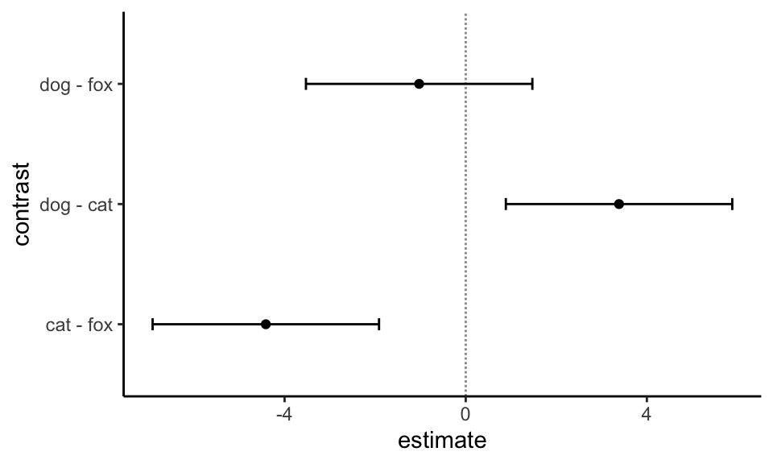
In Abbildung 32.5 sehen wir die Ergebnisse des multiplen Vergleiches nochmal anders als Pairwise P-value plot dargestellt. Wir haben auf der y-Achse zu Abwechselung mal die Gruppen dargestellt und auf der x-Achse die \(p\)-Werte. In den Kästchen sind die Effekte der Gruppen nochmal gezeigt. In unserem Fall die Mittelwerte der Sprungweiten für die drei Gruppen. Wir sehen jetzt immer den \(p\)-Wert für den jeweiligen Vergleich durch eine farbige Linie miteinander verbunden. So können wir nochmal eine andere Übersicht über das Ergebnis des multiplen Vergleich kriegen.
fit_2 %>%
emmeans(~ animal) %>%
pwpp(adjust = "bonferroni") +
theme_bw()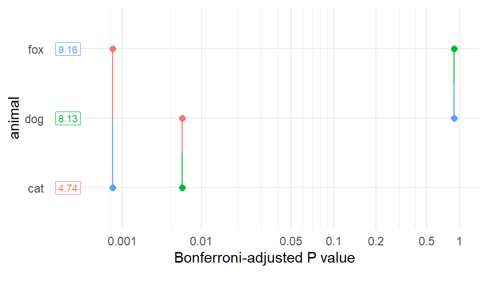
Auch haben wir die Möglichkeit un die \(p\)-Werte mit der Funktion pwpm() als eine Matrix ausgeben zu lassen. Wir erhalten in dem oberen Triangel die \(p\)-Wert für den jeweiligen Vergleich. In dem unteren Triangel die geschätzten Mittelwertsunterschiede. Auf der Diagonalen dann die geschätzten Mittelwerte für die jeweilige Gruppe. So haben wir nochmal alles sehr kompakt zusammen dargestellt.
fit_2 %>%
emmeans(~ animal) %>%
pwpm(adjust = "bonferroni") dog cat fox
dog [8.13] 0.0065 0.8756
cat 3.39 [4.74] 0.0006
fox -1.03 -4.41 [9.16]
Row and column labels: animal
Upper triangle: P values adjust = "bonferroni"
Diagonal: [Estimates] (emmean)
Lower triangle: Comparisons (estimate) earlier vs. laterWir wollen uns noch einen etwas komplizierteren Fall anschauen, indem sich emmeans von multcomp in der Anwendung unterscheidet. Wir laden den Datensatz flea_dog_cat_fox_site.csv in dem wir zwei Faktoren haben. Damit können wir dann ein Modell mit einem Interaktionsterm bauen. Wir erinnern uns, dass wir in der zweifaktoriellen ANOAV eine signifikante Interaktion zwischen den beiden Faktoren animal und site festgestelt hatten.
fac2_tbl <- read_csv2("data/flea_dog_cat_fox_site.csv") %>%
select(animal, site, jump_length) %>%
mutate(animal = as_factor(animal),
site = as_factor(site))Wir erhalten das Objekt fac2_tbl mit dem Datensatz in Tabelle 32.2 nochmal dargestellt.
| animal | site | jump_length |
|---|---|---|
| cat | city | 12.04 |
| cat | city | 11.98 |
| cat | city | 16.1 |
| cat | city | 13.42 |
| cat | city | 12.37 |
| cat | city | 16.36 |
| … | … | … |
| fox | field | 16.38 |
| fox | field | 14.59 |
| fox | field | 14.03 |
| fox | field | 13.63 |
| fox | field | 14.09 |
| fox | field | 15.52 |
In Abbildung 32.6 sehen wir nochmal die Daten visualisiert. Wichtig ist hier, dass wir zwei Faktoren vorliegen haben. Den Faktor animal und den Faktor site. Dabei ist der Faktor animal in dem Faktor site genested. Wir messen jedes Level des Faktors animal jeweils in jedem Level des Faktors site.
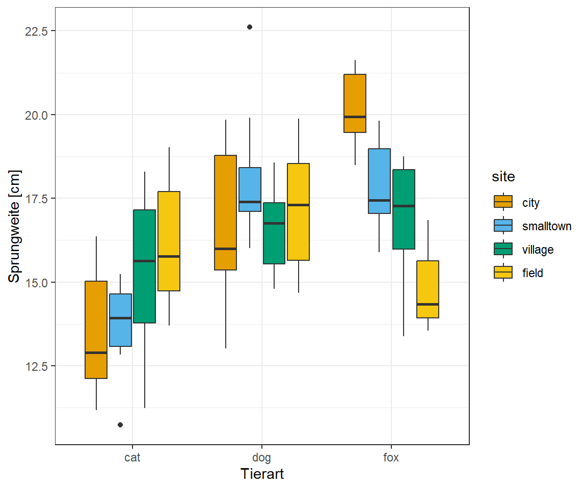
Wir rechnen ein multiples lineares Modell mit einem Interaktionsterm. Daher packen wir beide Faktoren in das Modell sowie die Intraktion zwischen den beiden Faktoren. Wir erhalten nach dem fitten des Modells das Objekt fit_3.
fit_3 <- lm(jump_length ~ animal + site + animal:site, data = fac2_tbl)Der Unterschied zu unserem vorherigen multiplen Vergleich ist nun, dass wir auch einen multiplen Vergleich für animal nested in site rechnen können. Dafür müssen wir den Vergleich in der Form animal | site schreiben. Wir erhalten dann die Vergleiche der Level des faktors animal getrennt für die Level es Faktors site.
comp_3_obj <- fit_3 %>%
emmeans(~ animal | site) %>%
contrast(method = "pairwise", adjust = "bonferroni")
comp_3_objsite = city:
contrast estimate SE df t.ratio p.value
cat - dog -3.101 0.771 108 -4.022 0.0003
cat - fox -6.538 0.771 108 -8.479 <.0001
dog - fox -3.437 0.771 108 -4.457 0.0001
site = smalltown:
contrast estimate SE df t.ratio p.value
cat - dog -4.308 0.771 108 -5.587 <.0001
cat - fox -4.064 0.771 108 -5.271 <.0001
dog - fox 0.244 0.771 108 0.316 1.0000
site = village:
contrast estimate SE df t.ratio p.value
cat - dog -1.316 0.771 108 -1.707 0.2722
cat - fox -1.729 0.771 108 -2.242 0.0809
dog - fox -0.413 0.771 108 -0.536 1.0000
site = field:
contrast estimate SE df t.ratio p.value
cat - dog -0.982 0.771 108 -1.274 0.6167
cat - fox 1.366 0.771 108 1.772 0.2379
dog - fox 2.348 0.771 108 3.045 0.0088
P value adjustment: bonferroni method for 3 tests Wir können uns das Ergebnis auch etwas schöner ausgeben lassen. Wir nutzen hier noch die Funktion format.pval() um die \(p\)-Werte besser zu formatieren. Die \(p\)-Wert, die kleiner sind als 0.001 werden als <0.001 ausgegeben und die anderen \(p\)-Werte auf zwei Nachstellen nach dem Komma gerundet.
comp_3_obj %>%
summary %>%
as_tibble %>%
select(contrast, site, p.value) %>%
mutate(p.value = format.pval(p.value, eps = 0.001, digits = 2))# A tibble: 12 × 3
contrast site p.value
<fct> <fct> <chr>
1 cat - dog city <0.001
2 cat - fox city <0.001
3 dog - fox city <0.001
4 cat - dog smalltown <0.001
5 cat - fox smalltown <0.001
6 dog - fox smalltown 1.00
7 cat - dog village 0.27
8 cat - fox village 0.08
9 dog - fox village 1.00
10 cat - dog field 0.62
11 cat - fox field 0.24
12 dog - fox field 0.01 In der Ausgabe können wir erkennen, dass die Vergleich in der Stadt alle signifkant sind. Jedoch erkennen wir keine signifikanten Ergebnisse mehr in dem Dorf und im Feld ist nur der Vergleich dog - fox signifkant. Hier solltest du nochmal beachten, warum wir die Analyse getrennt machen. In der zweifaktoriellen ANOVA haben wir gesehen, dass ein signifkanter Interaktionsterm zwischen den beiden Faktoren animal und site vorliegt.
Wir wollen uns noch über die Funktion confint() die 95% Konfidenzintervalle wiedergeben lassen.
res_3_obj <- comp_3_obj %>%
confint() %>%
as_tibble() %>%
select(contrast, site, estimate, conf.low = lower.CL, conf.high = upper.CL)
res_3_obj# A tibble: 12 × 5
contrast site estimate conf.low conf.high
<fct> <fct> <dbl> <dbl> <dbl>
1 cat - dog city -3.10 -4.98 -1.23
2 cat - fox city -6.54 -8.41 -4.66
3 dog - fox city -3.44 -5.31 -1.56
4 cat - dog smalltown -4.31 -6.18 -2.43
5 cat - fox smalltown -4.06 -5.94 -2.19
6 dog - fox smalltown 0.244 -1.63 2.12
7 cat - dog village -1.32 -3.19 0.559
8 cat - fox village -1.73 -3.60 0.146
9 dog - fox village -0.413 -2.29 1.46
10 cat - dog field -0.982 -2.86 0.893
11 cat - fox field 1.37 -0.509 3.24
12 dog - fox field 2.35 0.473 4.22 Besonders mit den 95% Konfiendezintervallen sehen wir nochmal den Interaktionseffekt zwischen den beiden Faktoren animal und site. So dreht sich der Effekt von zum Beispiel dog - fox von \(-3.44\) in dem Level city zu \(+2.35\) in dem Level field. Wir haben eine Interaktion vorliegen und deshalb die Analyse getrennt für jeden Level des Faktors site durchgeführt.
Abbildung 32.7 zeigt die entsprechenden 95% Konfidenzintervalle. Wir müssen hier etwas mit der position spielen, so dass die Punkte und der geom_errorbar richtig liegen.
ggplot(res_3_obj, aes(contrast, y=estimate, ymin=conf.low, ymax=conf.high,
color = site, group = site)) +
geom_hline(yintercept=0, linetype="11", colour="grey60") +
geom_errorbar(width=0.1, position = position_dodge(0.5)) +
geom_point(position = position_dodge(0.5)) +
scale_color_okabeito() +
coord_flip() +
theme_classic()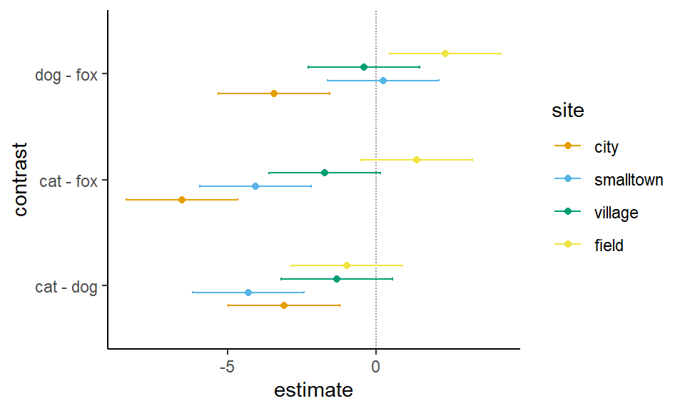
32.6 Gruppenvergleich unter Varianzheterogenität
Bis jetzt sind wir von Varianzhomogenität über alle Gruppen in unserer Behandlung ausgegangen. Oder aber konkret auf unser Beispiel, die Tierarten haben alle die gleiche Varianz. Jetzt gibt es aber häufiger mal den Fall, da können oder wollen wir nicht an Varianzhomogenität über alle Gruppen glauben. Deshalb gibt es hier noch Alternativen, von denen ich ein paar Vorstellen werde.
32.6.1 Games-Howell-Test
Der Games-Howell-Test ist eine Alternative zu dem Paket multcomp und dem Paket emmeans für ein einfaktorielles Design. Wir nutzen den Games-Howell-Test, wenn die Annahme der Homogenität der Varianzen, der zum Vergleich aller möglichen Kombinationen von Gruppenunterschieden verwendet wird, verletzt ist. Dieser Post-Hoc-Test liefert Konfidenzintervalle für die Unterschiede zwischen den Gruppenmitteln und zeigt, ob die Unterschiede statistisch signifikant sind. Der Test basiert auf der Welch’schen Freiheitsgradkorrektur und adjustiert die \(p\)-Werte. Der Test vergleicht also die Differenz zwischen den einzelnen Mittelwertpaaren mit einer Adjustierung für den Mehrfachtest. Es besteht also keine Notwendigkeit, zusätzliche p-Wert-Korrekturen vorzunehmen. Mit dem Games-Howell-Test ist nur ein all-pair Vergleich möglich.
Für den Games-Howell-Test aus dem Paket rstatix müssen wir kein lineares Modell fitten. Wir schreiben einfach die wie in einem t-Test das Outcome und den Faktor mit den Gruppenleveln in die Funktion games_howell_test(). Wir erhalten dann direkt das Ergebnis des Games-Howell-Test. Wir nutzen in diesem Beispiel die Daten aus dem Objekt fac1_tbl zu sehen in Tabelle 32.1.
fit_4 <- games_howell_test(jump_length ~ animal, data = fac1_tbl) Wir wollen aber nicht mit der Ausgabe arbeiten sondern machen uns noch ein wenig Arbeit und passen die Ausgabe an. Zum einen brauchen wir noch die Kontraste und wir wollen die \(p\)-Werte auch ansprechend formatieren. Wir erhalten das Objekt res_4_obj und geben uns die Ausgabe wieder.
res_4_obj <- fit_4 %>%
as_tibble %>%
mutate(contrast = str_c(group1, "-", group2)) %>%
select(contrast, estimate, p.adj, conf.low, conf.high) %>%
mutate(p.adj = format.pval(p.adj, eps = 0.001, digits = 2))
res_4_obj# A tibble: 3 × 5
contrast estimate p.adj conf.low conf.high
<chr> <dbl> <chr> <dbl> <dbl>
1 dog-cat -3.39 0.02 -6.28 -0.490
2 dog-fox 1.03 0.52 -1.52 3.57
3 cat-fox 4.41 0.00 2.12 6.71 Wir erhalten ein tibble() mit fünf Spalten. Zum einen den contrast, der den Vergleich widerspiegelt, den haben wir uns selber mit der Funktion mutate() und str_c() aus den Spalten group1 und group2 gebaut. Wir vergleichen im ersten Kontrast die Katzen- mit den Hundeflöhen, wobei wir dog-cat rechnen. Also wirklich den Mittelwert der Sprungweite der Hundeflöhe minus den Mittelwert der Sprungweite der Katzenflöhe rechnen. In der Spalte estimate sehen wir den Mittelwertsunterschied. Der Mittelwertsunterschied ist in der Richtung nicht ohne den Kontrast zu interpretieren. Danach erhalten wir die adjustierten \(p\)-Wert sowie die simultanen 95% Konfidenzintervalle.
Wir können die Nullhypothese ablehnen für den Vergleiche dog - cat mit einem p-Wert von \(0.02\) sowie für den Vergleich \(cat - fox\) mit einem p-Wert von \(0.00\). Beide p-Werte liegen unter dem Signifikanzniveau von \(\alpha\) gleich 5%.
In Abbildung 32.8 sind die simultanen 95% Konfidenzintervalle nochmal in einem ggplot visualisiert. Die Kontraste und die Position hängen von dem Faktorlevel ab.
ggplot(res_4_obj, aes(contrast, y=estimate, ymin=conf.low, ymax=conf.high)) +
geom_hline(yintercept=0, linetype="11", colour="grey60") +
geom_errorbar(width=0.1, position = position_dodge(0.5)) +
geom_point(position = position_dodge(0.5)) +
coord_flip() +
theme_classic()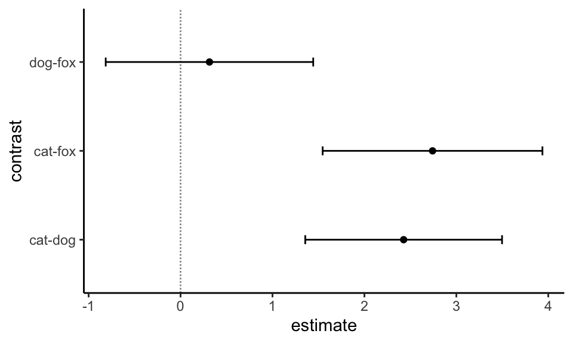
Die Entscheidungen nach den 95% Konfidenzintervallen sind die gleichen wie nach dem \(p\)-Wert. Da wir hier es mit einem Mittelwertsvergleich zu tun haben, ist die Entscheidung gegen die Nullhypothese zu treffen wenn die 0 im Konfidenzintervall ist.
32.6.2 Generalized Least Squares
Neben dem Games-Howell-Test gibt es auch die Möglichkeit Generalized Least Squares zu nutzen. Hier haben wir dann auch die Möglichkeit mehrfaktorielle Modelle zu schätzen und dann auch wieder emmeans zu nutzen. Das ist natürlich super, weil wir dann wieder in dem emmeans Framework sind und alle Funktionen von oben nutzen können. Deshalb hier auch nur die Modellanpassung, den Rest kopierst du dir dann von oben dazu.
Die Funktion gls() aus dem R Paket nlme passt ein lineares Modell unter Verwendung der verallgemeinerten kleinsten Quadrate an. Die Fehler dürfen dabei aber korreliert oder aber ungleiche Varianzen haben. Damit haben wir ein Modell, was wir nutzen können, wenn wir Varianzheterogenität vorliegen haben. Hier einmal das simple Beispiel für die Tierarten. Wir nehmen wieder die ganz normale Formelschreiweise. Wir können jetzt aber über die Option weights = angeben, wie wir die Varianz modellieren wollen. Die Schreibweise mag etwas ungewohnt sein, aber es gibt wirklich viele Arten die Varainz zu modellieren. Hier machen wir uns es einfach und nutzen die Helferfunktion varIdent und modellieren dann für jedes Tier eine eigene Gruppenvarianz.
gls_fac1_fit <- gls(jump_length ~ animal,
weights = varIdent(form = ~ 1 | animal),
data = fac1_tbl)Dann können wir die Modellanpasssung auch schon in emmeans() weiterleiten und schauen uns mal das Ergebnis gleich an. Wir achten jetzt auf die Spalte SE, die uns ja den Fehler der Mittelwerte für jede Gruppe wiedergibt.
gls_fac1_fit %>%
emmeans(~ animal) animal emmean SE df lower.CL upper.CL
dog 8.13 0.811 6.01 6.15 10.1
cat 4.74 0.719 6.01 2.98 6.5
fox 9.16 0.415 6.00 8.14 10.2
Degrees-of-freedom method: satterthwaite
Confidence level used: 0.95 Wir sehen, dass wir für jedes Tier eine eigene Varianz über den Standardfehler SE geschätzt haben. Das war es ja auch was wir wollten. Bis hierhin wäre es auch mit dem Games-Howell-Test gegangen. Was ist aber, wenn wir ein zweifaktorielles design mit Interaktion schätzen wollen? Das können wir analog wie eben machen. Wir erweitern einfach das Modell um die Terme site für den zweiten Faktor und den Interaktionsterm animal:site.
gls_fac2_fit <- gls(jump_length ~ animal + site + animal:site,
weights = varIdent(form = ~ 1 | animal),
data = fac2_tbl)Dann können wir uns wieder die multiplen Vergleiche getrennt für die Interaktionsterme wiedergeben lassen. Blöderweise haben jetzt alle Messorte site die gleiche Varianz für jede Tierart, aber auch da können wir noch ran.
gls_fac2_fit %>%
emmeans(~ animal | site)site = city:
animal emmean SE df lower.CL upper.CL
cat 13.6 0.603 36.0 12.4 14.8
dog 16.7 0.581 36.1 15.5 17.9
fox 20.1 0.437 36.0 19.2 21.0
site = smalltown:
animal emmean SE df lower.CL upper.CL
cat 13.7 0.603 36.0 12.5 15.0
dog 18.0 0.581 36.1 16.9 19.2
fox 17.8 0.437 36.0 16.9 18.7
site = village:
animal emmean SE df lower.CL upper.CL
cat 15.2 0.603 36.0 14.0 16.5
dog 16.6 0.581 36.1 15.4 17.7
fox 17.0 0.437 36.0 16.1 17.9
site = field:
animal emmean SE df lower.CL upper.CL
cat 16.2 0.603 36.0 15.0 17.4
dog 17.2 0.581 36.1 16.0 18.3
fox 14.8 0.437 36.0 13.9 15.7
Degrees-of-freedom method: satterthwaite
Confidence level used: 0.95 Die eigentliche Stärke von gls() kommt eigentlich erst zu tragen, wenn wir auch noch erlauben, dass wir die Varianz über alle Tierarten, Messsorte und Interaktionen variieren kann. Das machen wir, in dem wir einfach animal*site zu der varIdent() Funktion ergänzen.
gls_fac2_fit <- gls(jump_length ~ animal + site + animal:site,
weights = varIdent(form = ~ 1 | animal*site),
data = fac2_tbl)Dann noch schnell in emmeans() gesteckt und sich das Ergebnis angeschaut.
gls_fac2_fit %>%
emmeans(~ animal | site)site = city:
animal emmean SE df lower.CL upper.CL
cat 13.6 0.594 7.87 12.2 15.0
dog 16.7 0.713 8.86 15.1 18.3
fox 20.1 0.365 9.00 19.3 20.9
site = smalltown:
animal emmean SE df lower.CL upper.CL
cat 13.7 0.433 8.99 12.8 14.7
dog 18.0 0.614 9.53 16.7 19.4
fox 17.8 0.433 8.98 16.8 18.8
site = village:
animal emmean SE df lower.CL upper.CL
cat 15.2 0.743 8.93 13.6 16.9
dog 16.6 0.384 9.00 15.7 17.4
fox 17.0 0.548 8.71 15.7 18.2
site = field:
animal emmean SE df lower.CL upper.CL
cat 16.2 0.601 6.66 14.8 17.6
dog 17.2 0.563 8.38 15.9 18.5
fox 14.8 0.378 9.00 14.0 15.7
Degrees-of-freedom method: satterthwaite
Confidence level used: 0.95 Wie du jetzt siehst schätzen wir die Varianz für jede Tierart und jeden Messort separat. Wir haben also wirklich jede Varianz einzeln zugeordnet. Die Frage ist immer, ob das notwendig ist, denn wir brauchen auch eine gewisse Fallzahl, damit die Modelle funktionieren. Aber das kommt jetzt sehr auf deine Fragestellung an und müssten wir nochmal konkret besprechen.
Weitere Literatur
Auf der Seite DSFAIR gibt es noch einen Artikel zu emmeans und der Frage Why are the StdErr all the same? und dazu dann auch passend die Publikation Analyzing designed experiments: Should we report standard deviations or standard errors of the mean or standard errors of the difference or what?
32.6.3 Robuste Schätzung von Standardfehlern
Wir immer gibt es noch eine Möglichkeit die Varianzheterogenität zu behandeln. Wir nutzen jetzt hier einmal die Funktionen aus dem R Paket sandwich, die es uns ermöglichen Varianzheterogenität (eng. heteroskedasticity) zu modellieren. Es ist eigentlich super einfach, wir müssen als erstes wieder unser Modell anpassen. Hier einmal mit einer simplen linearen Regression.
lm_fac1_fit <- lm(jump_length ~ animal, data = fac1_tbl)Dann können wir auch schon für einen Gruppenvergleich direkt in der Funktion emmeans für die Varianzheterogenität adjustieren. Es gibt verschiedene mögliche Sandwich-Schätzer, aber wir nehmen jetzt mal einen der häufigsten mit vcovHC. Wie immer gilt, es gibt ja nach Datenlage bessere und schlechtere Schätzer. Wir laden jetzt nicht das ganze Paket, sondern nur die Funktion mit sandwich::vcovHAC. Achtung, hinter der Option vcov. ist ein Punkt. Ohne den Aufruf vcov. = funktioniert die Funktion dann nicht.
em_obj <- lm_fac1_fit %>%
emmeans(~ animal, method = "pairwise", vcov. = sandwich::vcovHAC)
em_obj animal emmean SE df lower.CL upper.CL
dog 8.13 0.633 18 6.80 9.46
cat 4.74 0.810 18 3.04 6.44
fox 9.16 0.468 18 8.17 10.14
Confidence level used: 0.95 Wir du siehst, die Standardfehler sind jetzt nicht mehr über alle Gruppen gleich. Dann können wir uns auch die paarweisen Vergleiche ausgeben lassen.
contr_obj <- em_obj %>%
contrast(method = "pairwise", adjust = "none")Oder aber wir lassen uns das compact letter display wiedergeben.
cld_obj <- em_obj %>%
cld(Letters = letters, adjust = "none")
Exkurs: Robuste Schätzung von Standardfehlern, Konfidenzintervallen und p-Werten
Wenn du noch etwas weiter gehen möchtest, dann kannst du dir noch die Hilfeseite von dem R Paket performance Robust Estimation of Standard Errors, Confidence Intervals, and p-values anschauen. Die Idee ist hier, dass wir die Varianz/Kovarianz robuster daher mit der Berücksichtigung von Varianzheterogenität (eng. heteroskedasticity) schätzen.
32.7 Compact letter display
In der Pflanzenernährung ist es nicht unüblich sehr viele Substrate miteinander zu vergleichen. Oder andersherum, wenn wir sehr viele Gruppen haben, dann kann die Darstellung in einem all-pair Vergleich sehr schnell sehr unübersichltich werden. Deshalb wure das compact letter display entwickelt.
Compact Letter Display (CLD) - What is it?. Das compact letter display zeigt an, bei welchen Vergleichen der Behandlungen die Nullhypothese gilt. Daher werden die nicht signifikanten Ergebnisse visualisiert.
Schauen wir uns aber zurerst einmal ein größeres Beispiel mit neun Behandlungen mit jeweils zwanzig Beobachtungen an. Wir erstellen uns den Datensatz in der Form, dass sich die Mittelwerte für die Behandlungen teilweise unterscheiden.
set.seed(20220914)
data_tbl <- tibble(trt = gl(n = 9, k = 20,
labels = c("pos_crtl", "neg_ctrl", "treat_A", "treat_B",
"treat_C", "treat_D", "treat_E", "treat_F",
"treat_G")),
rsp = c(rnorm(20, 10, 5), rnorm(20, 20, 5), rnorm(20, 22, 5), rnorm(20, 24, 5),
rnorm(20, 35, 5), rnorm(20, 37, 5), rnorm(20, 40, 5), rnorm(20, 43, 5),
rnorm(20, 50, 5)))In der Abbildung 32.9 ist der Datensatz data_tbl nochmal als Boxplot dargestellt.
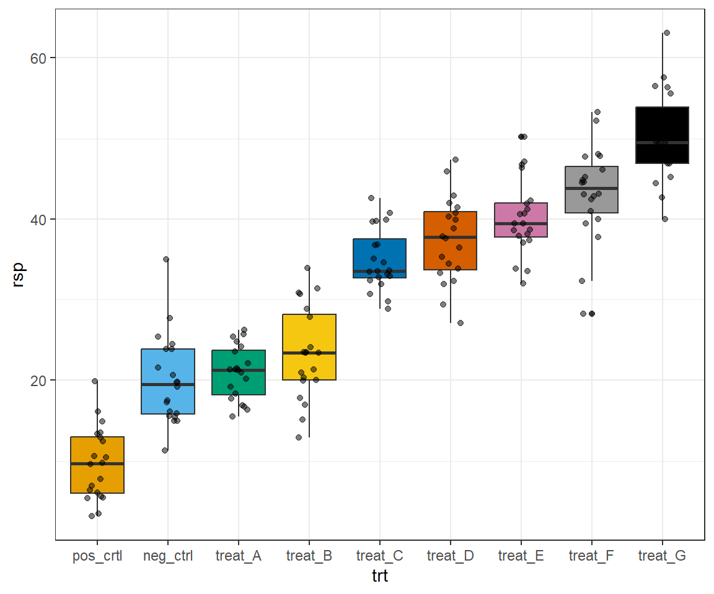
Wir sehen, dass sich die positive Kontrolle von dem Rest der Behandlungen unterscheidet. Danach haben wir ein Plateau mit der negativen Kontrolle und der Behanldung A und der Behandlung B. Nach diesem Plateau haben wir einen Sprung und sehen einen leicht linearen Anstieg der Mittelwerte der Behandlungen.
Schauen wir uns zuerst einmal an, wie ein compact letter display aussehen würde, wenn kein Effekt vorliegen würde. Daher die Nullhypothese ist wahr und die Mittelwerte der Gruppen unterscheiden sich nicht. Wir nutzen hier einmal ein kleineres Beispiel mit den Behandlungslevels ctrl, treat_A und treat_B. Alle drei Behandlungslevel haben einen Mittelwert von 10. Es gilt die Nullhypothese und wir erhalten folgendes compact letter display in Tabelle 32.3.
| Behandlung | Mittelwert | \(\phantom{a}\) | ||
|---|---|---|---|---|
| ctrl | 10 | a | \(\phantom{a}\) | \(\phantom{a}\) |
| treat_A | 10 | a | ||
| treat_B | 10 | a |
Das Gegenteil sehen wir in der Tabelle 32.4. Hier haben wir ein compact letter display wo sich alle drei Mittelwerte mit 10, 15 und 20 voneinander klar unterscheiden. Die Nullhypothese gilt für keinen der möglichen paarweisen Vergleiche.
| Behandlung | Mittelwert | |||
|---|---|---|---|---|
| ctrl | 10 | a | \(\phantom{a}\) | \(\phantom{a}\) |
| treat_A | 15 | b | ||
| treat_B | 20 | \(\phantom{a}\) | c |
Schauen wir uns nun die Implementierung des compact letter display für die verschiedenen Möglichkeiten der Multiplen Vergleiche einmal an.
32.7.1 … für pairwise.*.test()
Wenn wir für die Funktionen pairwise.*.test() das compact letter display berechnen wollen, dann müssen wir etwas ausholen. Denn wir müssen dafür die Funktion multcompLetters() nutzen. Diese Funktion braucht die \(p\)-Werte als Matrix und diese Matrix der \(p\)-Werte kriegen wir über die Funktion fullPTable(). Am Ende haben wir aber dann das was wir wollten. Ich habe hier nochmal das einfache Beispiel mit den Sprungweiten von oben genommen.
pairwise.t.test(fac1_tbl$jump_length, fac1_tbl$animal,
p.adjust.method = "bonferroni") %>%
extract2("p.value") %>%
fullPTable() %>%
multcompLetters()dog cat fox
"a" "b" "a" Als Ergebnis erhalten wir, dass Hund- und Fuchsflöhe gleich weit springen, beide teilen sich den gleichen Buchstaben. Katzenflöhe springen unterschiedlich zu Hunden- und Fuchsflöhen. Das Vorgehen ändert sich dann nicht, wenn wir eine andere Funktion wie pairwise.wilcox.test() nehmen.
32.7.2 … für das Paket multcomp
Wir schauen uns zuerst einmal die Implementierung des compact letter display in dem Paket multcomp an. Wir nutzen die Funktion multcompLetters() aus dem Paket multcompView um uns das compact letter display wiedergeben zu lassen. Davor müssen wir noch einige Schritte an Sortierung und Umbenennung durchführen. Das hat den Grund, dass die Funktion multcompLetters() nur einen benannten Vektor mit \(p\)-Werten akzeptiert. Das heist wir müssen aus der Funktion glht() die adjustierten \(p\)-Werte extrahieren und dann einen Vektor der Vergleiche bzw. Kontraste in der Form A-B bauen. Also ohne Leerzeichen und in der Beschreibung der Level der Behandlung trt. Die Funktion pull() erlaubt uns einen Spalte als Vektor aus einem tibble() zu ziehen und dann nach der Spalte contrast zu benennen.
multcomp_cld <- lm(rsp ~ trt, data = data_tbl) %>%
glht(linfct = mcp(trt = "Tukey")) %>%
tidy %>%
mutate(contrast = str_replace_all(contrast, "\\s", "")) %>%
pull(adj.p.value, contrast) %>%
multcompLetters() Wir erhalten dann folgendes compact letter display für die paarweisen Vergleiche aus multcomp.
multcomp_cld neg_ctrl treat_A treat_B treat_C treat_D treat_E treat_F treat_G
"a" "a" "a" "b" "bc" "cd" "d" "e"
pos_crtl
"f" Leider sind diese Buchstaben in dieser Form schwer zu verstehen. Deshalb gibt es noch die Funktion plot() in dem Paket multcompView um uns die Buchstaben mit den Leveln der Behandlung einmal ausgeben zu lassen. Wir erhalten dann folgende Abbildung.
multcomp_cld %>% plotIn dem compact letter display bedeuten gleiche Buchstaben, dass die Behandlungen gleich sind. Es gilt die Nullhypothese für diesen Vergleich.
Was sehen wir hier? Kombinieren wir einmal das compact letter display mit den Leveln der Behandlung und den Mittelwerten der Behandlungen in einer Tabelle 32.5. Wenn die Mittelwerte gleich sind, dann erhalten die Behandlungslevel den gleichen Buchstaben. Die Mittelwerte vom neg_ctrl, treat_A und treat_B sind nahezu gleich, also damit nicht signifikant. Deshalb erhalten diese Behandlungslevel ein a. Ebenso sind die MIttelwerte von treat_C und treat_D nahezu gleich, dehalb erhalten beide ein b. Das machen wir immer so weiter und konzentrieren uns also auf die nicht signifikanten Ergebnisse. Denn gleiche Buchstaben bedeuten, dass die Behandlungen gleich sind. Wir sehen hier also, bei welchen Vergleichen die Nullhypothese gilt.
| Behandlung | Mittelwert | ||||||
|---|---|---|---|---|---|---|---|
| neg_ctrl | 20 | a | |||||
| treat_A | 22 | a | |||||
| treat_B | 24 | a | |||||
| treat_C | 35 | b | |||||
| treat_D | 37 | b | c | ||||
| treat_E | 40 | c | d | ||||
| treat_F | 43 | d | |||||
| treat_G | 45 | e | |||||
| pos_crtl | 10 | f |
Wir können dann die Buchstaben auch in den Boxplot ergaänzen. Die y-Position kann je nach Belieben dann noch angepasst werden. zum Beispiel könnten hier auch die Mittelwerte aus einer summarise() Funktion ergänzt werden und so die y-Position angepasst werden.
letters_tbl <- multcomp_cld$Letters %>%
enframe("trt", "label") %>%
mutate(rsp = 0)
ggplot(data_tbl, aes(x = trt, y = rsp,
fill = trt)) +
theme_bw() +
geom_boxplot() +
scale_fill_okabeito() +
geom_jitter(width = 0.15, alpha = 0.5) +
geom_text(data = letters_tbl,
aes(x = trt , y = rsp, label = label)) +
theme(legend.position = "none")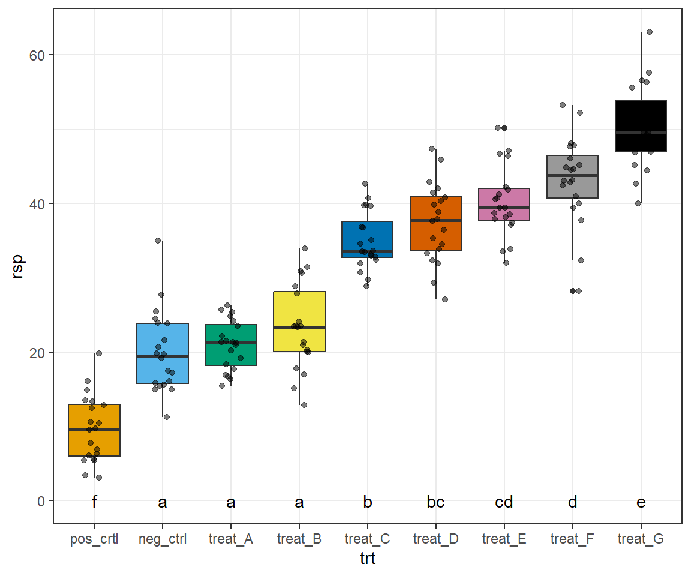
32.7.3 … für das Paket emmeans
In dem Paket emmeans ist das compact letter display ebenfalls implementiert und wir müssen nicht die Funktion multcompLetters() nutzen. Durch die direkte Implementierung ist es etwas einfacher sich das compact letter display anzeigen zu lassen. Das Problem ist dann später sich die Buchstaben zu extrahieren um die Abbildung 32.11 zu ergänzen. Wir nutzen in emmeans die Funktion cld() um das compact letter display zu erstellen.
emmeans_cld <- lm(rsp ~ trt, data = data_tbl) %>%
emmeans(~ trt) %>%
cld(Letters = letters, adjust = "bonferroni")Wir erhalten dann die etwas besser sortierte Ausgabe für die Behandlungen wieder.
emmeans_cld trt emmean SE df lower.CL upper.CL .group
pos_crtl 9.67 1.12 171 6.51 12.8 a
neg_ctrl 20.02 1.12 171 16.86 23.2 b
treat_A 20.97 1.12 171 17.81 24.1 b
treat_B 23.35 1.12 171 20.19 26.5 b
treat_C 34.96 1.12 171 31.80 38.1 c
treat_D 37.46 1.12 171 34.30 40.6 cd
treat_E 40.17 1.12 171 37.01 43.3 de
treat_F 43.23 1.12 171 40.07 46.4 e
treat_G 50.51 1.12 171 47.35 53.7 f
Confidence level used: 0.95
Conf-level adjustment: bonferroni method for 9 estimates
P value adjustment: bonferroni method for 36 tests
significance level used: alpha = 0.05
NOTE: If two or more means share the same grouping symbol,
then we cannot show them to be different.
But we also did not show them to be the same. Wie die Ausgabe von cld() richtig anmerkt, können compact letter display irreführend sein weil sie eben Nicht-Unterschiede anstatt von signifikanten Unterschieden anzeigen. Zum Anderen sehen wir aber auch, dass wir 36 statistische Tests gerechnet haben und somit zu einem Signifikanzniveau von \(\cfrac{\alpha}{k} = \cfrac{0.05}{36} \approx 0.0014\) testen. Wir brauchen also schon sehr große Unterschiede oder aber eine sehr kleine Streuung um hier signifikante Effekte nachweisen zu können.
In Tabelle 32.6 sehen wir das Ergebnis des compact letter display nochmal mit den Mittelwerten der Behandlungslevel zusammen dargestellt. Wir sehen wieder, dass sich pos_crtl von allen anderen Behandlungen unterscheidet, deshalb hat nur die Behandlung pos_crtl den Buchstaben a. Die Mittelwerte vom neg_ctrl, treat_A und treat_B sind nahezu gleich, also damit nicht signifikant. Deshalb erhalten diese Behandlungslevel ein b. Wir gehen so alle Vergleiche einmal durch.
| Behandlung | Mittelwert | ||||||
|---|---|---|---|---|---|---|---|
| pos_crtl | 10 | a | |||||
| neg_ctrl | 20 | b | |||||
| treat_A | 22 | b | |||||
| treat_B | 24 | b | |||||
| treat_C | 35 | c | |||||
| treat_D | 37 | c | d | ||||
| treat_E | 40 | d | e | ||||
| treat_F | 43 | e | |||||
| treat_G | 45 | f |
Abschließend können wir die Buchstaben aus dem compact letter display noch in die Abbildung 32.11 ergänzen. Hier müssen wir etwas mehr machen um die Buchstaben aus dem Objekt emmeans_cld zu bekommen. Du kannst dann noch die y-Position anpassen wenn du möchtest.
letters_tbl <- emmeans_cld %>%
tidy %>%
select(trt, label = .group) %>%
mutate(rsp = 0)
ggplot(data_tbl, aes(x = trt, y = rsp,
fill = trt)) +
theme_bw() +
geom_boxplot() +
scale_fill_okabeito() +
geom_jitter(width = 0.15, alpha = 0.5) +
geom_text(data = letters_tbl,
aes(x = trt , y = rsp, label = label)) +
theme(legend.position = "none")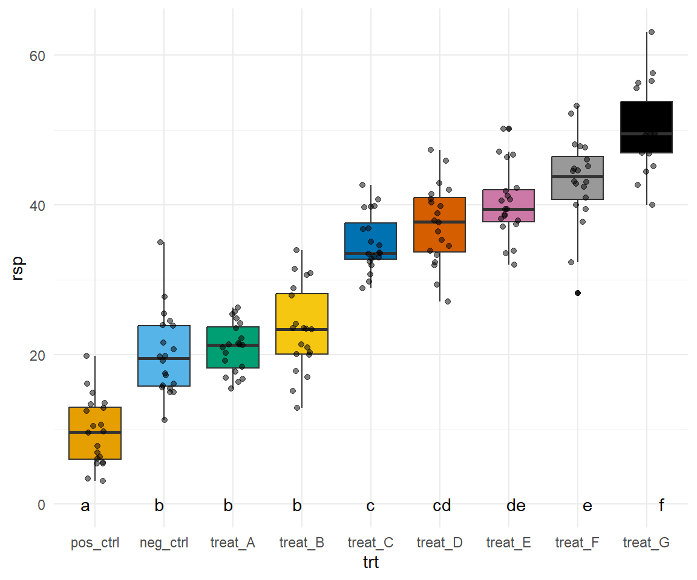
32.7.4 … für den Games-Howell-Test
Abschließend wollen wir uns die Implementierung des compact letter display für den Games-Howell-Test einmal anschauen. Es gilt vieles von dem in diesem Abschnitt schon gesagtes. Wir nutzen die Funktion multcompLetters() aus dem Paket multcompView um uns das compact letter display aus dem Games-Howell-Test wiedergeben zu lassen. Davor müssen wir noch einige Schritte an Sortierung und Umbenennung durchführen. Das hat den Grund, dass die Funktion multcompLetters() nur einen benannten Vektor mit \(p\)-Werten akzeptiert. Die Funktion pull() erlaubt uns einen Spalte als Vektor aus einem tibble() zu ziehen und dann nach der Spalte contrast zu benennen.
ght_cld <- games_howell_test(rsp ~ trt, data = data_tbl) %>%
mutate(contrast = str_c(group1, "-", group2)) %>%
pull(p.adj, contrast) %>%
multcompLetters() Das compact letter display kennen wir schon aus der obigen Beschreibung.
ght_cldpos_crtl neg_ctrl treat_A treat_B treat_C treat_D treat_E treat_F
"a" "b" "b" "b" "c" "cd" "d" "d"
treat_G
"e" Wir können uns dann auch das compact letter display als übersichtlicheren Plot wiedergeben lassen.
ght_cld %>% plotUm die Zusammenhänge besser zu verstehen ist in Tabelle 32.7 nochmal die Kombination der Level der Behandlungen und deren Mittelwerte zur Generieung sowie dem compact letter display dargestellt. Wir sehen wieder, dass sich pos_crtl von allen anderen Behandlungen unterscheidet, deshalb hat nur die Behandlung pos_crtl den Buchstaben a. Die Mittelwerte vom neg_ctrl, treat_A und treat_B sind nahezu gleich, also damit nicht signifikant. Deshalb erhalten diese Behandlungslevel ein b. In der Form können wir alle Vergleiche einmal durchgehen.
| Behandlung | Mittelwert | |||||
|---|---|---|---|---|---|---|
| pos_crtl | 10 | a | ||||
| neg_ctrl | 20 | b | ||||
| treat_A | 22 | b | ||||
| treat_B | 24 | b | ||||
| treat_C | 35 | c | ||||
| treat_D | 37 | c | d | |||
| treat_E | 40 | d | ||||
| treat_F | 43 | d | ||||
| treat_G | 45 | e |
Wir können dann auch in Abbildung 32.12 sehen, wie das compact letter display mit den Boxplots verbunden wird.
letters_tbl <- ght_cld$Letters %>%
enframe("trt", "label") %>%
mutate(rsp = 0)
ggplot(data_tbl, aes(x = trt, y = rsp,
fill = trt)) +
theme_bw() +
geom_boxplot() +
scale_fill_okabeito() +
geom_jitter(width = 0.15, alpha = 0.5) +
geom_text(data = letters_tbl,
aes(x = trt , y = rsp, label = label)) +
theme(legend.position = "none")